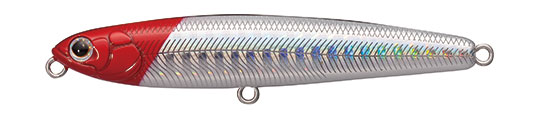
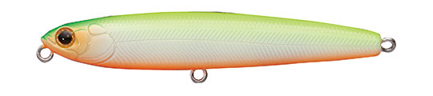
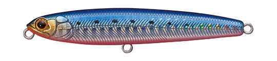
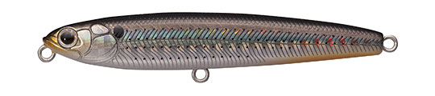

クルーズ シンキングペンシル80
（CRUISE CRSP80）
クルーズ シンキングペンシル80はTACKLEHOUSE（タックルハウス）のシンキングペンシルです。
港湾シーバスをメインターゲットにした「クルーズ」シリーズのシンキングペンシルで、シンペンとしての基本性能を突き詰めたモデル。ウッドルアー並みの水絡みで、重い流れの中でも翻弄されずに安定してドリフトさせられます。

画像出典:TACKLEHOUSE公式HP
スペック
- メーカー
- TACKLEHOUSE（タックルハウス）
- タイプ
- シンキングペンシル（固定ウェイト）
- 全長
- 80mm
- 自重
- 11g
- フック
- ST-46 #8
- リング
- #3
- アクション
- スラローム
- ターゲット
- シーバス
- 価格
- 1,500円（税別）
▼今すぐチェック

クルーズ シンキングペンシル80の特徴
流れの中で真価を発揮する、港湾シーバス用の80mmシンペン
-
ウッド並みの水絡みで安定したドリフト
ウッドルアーのように水によく絡むボディで、重厚な流れにも翻弄されません。流れに乗せて漂わせるドリフトで、安定した姿勢を保ったまま操作できます。
-
シンペンとシャローミノーの融合
ミディアムリトリーブからのスラロームアクションは、シンキングペンシルとシャローミノーを融合させたような動き。シンペンが苦手な人でも「泳いでいる感覚」をつかみやすいモデルです。
-
障害物を攻められるタフボディ
クルーズシリーズ共通の特徴がタフボディ。岸壁や橋脚など、硬い障害物ギリギリへのピンポイントキャストも安心して行えます。スローシンキング設定と静かなアクションで、スレたシーバスにも警戒されにくいのが強みです。
クルーズ シンキングペンシル80の使い方
流れのある場所では、アップクロスに投げて糸フケを取りながら流れに乗せるドリフトが基本。流れのヨレを感じたら、そこでゆっくり漂わせて食わせの間を作ります。
流れの弱い港湾部では、ミディアムリトリーブでスラロームさせて広く探りましょう。
クルーズ シンキングペンシル80の得意な状況
港湾・湾岸エリアの岸壁や明暗、河川や河口の流れのヨレ。ミノーやバイブレーションで反応がないときや、魚がスレていてバイトが小さいときに、静かなアクションで口を使わせたい場面に向いています。
ワンポイント
クルーズシリーズは「まずミノー、反応がなければバイブレーション、スレていたらシンキングペンシル」という順番で使う前提で作られています。このシンペンはローテーションの最後に「食わせ」で投げる1本として持っておくと心強いです。
クルーズシリーズの使い分け
| モデル | タイプ | 使いどころ |
|---|---|---|
| フローティングミノー（CRFM80） | フローティングミノー | 最初の1投。表層の活性の高いシーバスを探る |
| バイブレーション（CRV70） | バイブレーション | ミノーで反応がないとき。表層から底まで広く探る |
| シンキングペンシル（CRSP80） | シンキングペンシル | 魚がスレていたり、バイトが小さいときの食わせに |
どれも港湾シーバス向けのタフボディ。3つをセットで持っておくと、状況に合わせてローテーションしやすくなります。
人気カラー
全5色のラインナップから4色を紹介します（カラー名は公式の表記のまま）。

No.1 SHGレッドヘッドシーバスの定番レッドヘッド。夜の港湾や、まず投げる1本として。

No.2 パールチャート/オレンジベリーパールチャートにオレンジベリー。濁りのある日や、夜の常夜灯まわりでのアピールに。

No.3 SHGイワシ/レッドベリーイワシ系のナチュラルカラー。澄み潮の日中や、イワシがベイトのときに。

No.4 SHGボラコノシロボラやコノシロを意識したカラー。大きめのベイトに付いたシーバスに。
画像出典:TACKLEHOUSE公式HP
クルーズ シンキングペンシル80に似ているルアー
-
 パンチライン80
アピア
詳細はこちら＞
パンチライン80
アピア
詳細はこちら＞
80mm・13gのシンキングペンシル。同じ80mmクラスで、もう少し重さと飛距離が欲しいときに。
-
 スウォーム80S
GOTO9
詳細はこちら＞
スウォーム80S
GOTO9
詳細はこちら＞
80mm・8.6gのシンキングペンシル。同じサイズで、より表層を引き波で引きたいときに。
-
 ローリングベイト77
タックルハウス
詳細はこちら＞
ローリングベイト77
タックルハウス
詳細はこちら＞
77mm・15gのシンキングペンシル。同じタックルハウスで、遠投してローリングで広く探りたいときに。